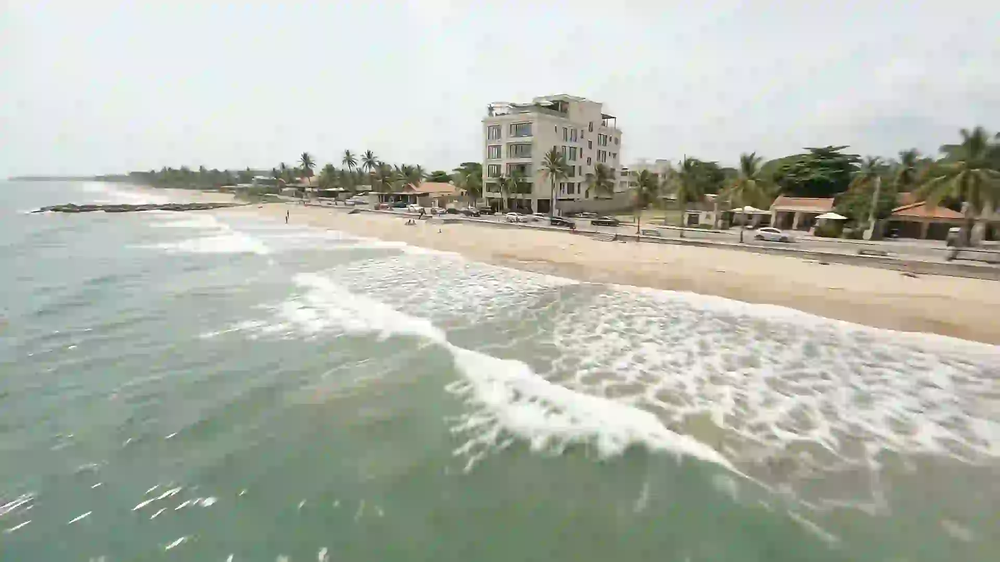

Le Douze · restaurant et lounge · Libreville
Depuis la mer, on le reconnaît à ses parasols.
Faites défiler la page pour rejoindre le toit.
Trois étages au-dessus du boulevard, l'Atlantique pour seul voisin.
Le déjeuner se prend au soleil, sous les parasols de toile.
En contrebas, la plage ; au-delà, l'Atlantique jusqu'à l'horizon.
Sous la pergola, le salon-bar ouvre ses baies sur la mer.
Douze heures sur un toit, face à l'océan.
Le déjeuner au soleil, le coucher du soleil sur l'Atlantique, puis la nuit au bar. Le Douze vous reçoit chaque jour de midi à minuit, au troisième étage et sur le toit.
Réserver une tableLe vol du Douze
La plaque de laiton vous conduit à la page du Douze : le coucher du soleil, la table, le bar et la réservation.